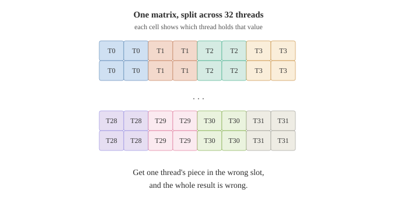

Why FP8 on Ada is worth checking
FP8 is a very small number format. Each value is just 8 bits. That is tiny compared to the usual 16-bit or 32-bit floats. For big AI models this smallness is a gift: less memory used, and faster math. So FP8 has become important for running large models cheaply.
Modern NVIDIA GPUs support FP8 in hardware. The experiments here were run on an NVIDIA L4, which uses the Ada Lovelace architecture. Ada added FP8 support in its tensor cores. On paper, the L4 can do FP8.
But FP8 on Ada has a rough history. When it was new, many tools did not support it well. Triton had a bug where FP8 conversion failed on Ada because the generated code was too old. Some of the low-level hardware behavior is not even clearly documented. So "Ada supports FP8" and "FP8 actually works well on Ada in my tool" are two different claims. The first is on the spec sheet. The second you have to check.
This post is that check, for one specific tool: cuda-oxide.
What cuda-oxide is
Normally, to write GPU programs you use CUDA C++. It works, but C++ is an old language with sharp edges: easy to make memory mistakes, hard to keep safe.
cuda-oxide is a new tool from NVIDIA's research labs that lets you write GPU programs in Rust instead. You write normal Rust code, and cuda-oxide compiles it directly to GPU code (called PTX). No CUDA C++, no special language, just Rust. This is interesting because Rust is a modern language with strong safety guarantees: it catches many memory mistakes at compile time, before your program ever runs.
The project is young and moving fast. Recently it added FP8 support for Ada. But here is the interesting detail: much of that FP8 code was not written by hand. It was auto-generated by a tool that reads hardware descriptions and produces the matching functions.
Auto-generated code is a smart way to cover a lot of ground quickly. But it raises a fair question. A function can exist, and compile, and still not do the right thing on real hardware, especially for a tricky, under-documented feature like Ada FP8. Generated is not the same as verified.
So the functions were there. The question was whether they actually compute correct answers on a real Ada GPU. That is what I set out to test on my L4.
How I tested it
The idea is simple. If I want to know whether a GPU function gives the right answer, I make it compute something, then check that answer against one I trust.
So for each FP8 function I did three things.
First, I wrote a small Rust GPU program that used the function. Just enough to feed it some numbers and get results back.
Second, I computed the same thing on the normal CPU, by hand, in plain code. This is my "reference": the answer I trust. Then I compared the GPU result against it. If they match, the GPU function is correct.
Third, I looked at the actual GPU code that cuda-oxide produced (the PTX). I wanted to confirm it used the real FP8 hardware instruction, and not some slower fallback that happens to give the same answer. Seeing the right instruction means the answer came from the hardware FP8 path I meant to test.
There is one more careful detail. FP8 is a very rough format: it can only store a few exact values, and everything else gets rounded. So I chose my test numbers to be values that FP8 can store exactly (small whole numbers). That way, there is no rounding to argue about. If the GPU answer differs from the CPU answer even slightly, it is a real mismatch, not just rounding. This makes the test strict: a correct result has to be exactly correct.
Part 1: conversions
The most basic FP8 operations are conversions. You take a normal number and turn it into FP8, or you take an FP8 value and turn it back into a normal number. Everything else with FP8 builds on these, so they are the natural place to start.
There are a few kinds to check. FP8 comes in two formats, called e4m3 and e5m2. They split the 8 bits differently: e4m3 keeps more precision, e5m2 reaches larger numbers. And conversions go both ways: into FP8, and back out. There is also a fused "relu" version, which clamps negative numbers to zero as part of the conversion.
I tested all of these. Convert into e4m3 and e5m2. Convert back out again. Do a full round-trip: take a number, turn it into FP8, turn it back, and see what survives. And the relu versions, checking that negatives really do become zero.
Every result matched my CPU reference. The round-trips behaved exactly as FP8 rounding should: for example, 1.1 came back as 1.125, and 2.7 came back as 2.75, because those are the nearest values e4m3 can store. The relu versions correctly turned negatives into zero and left positives alone.
I also checked the generated GPU code. Each conversion compiled to a single, correct hardware instruction, with no clumsy extra work around it. So conversions are not just correct, they are compiled cleanly.
That is the easy part done. Conversions on Ada work. Now for the harder and more interesting operation.
Part 2: matrix-multiply (MMA)
Conversions are the warm-up. The operation that really matters is matrix-multiply.
AI models spend most of their time multiplying matrices. Modern GPUs have special hardware just for this, called tensor cores, and they are enormously faster than doing the math the normal way. The instruction that uses them is called MMA (matrix-multiply-accumulate). If FP8 matrix-multiply works on Ada, that is the operation that makes FP8 actually useful for real workloads. So this is the important test.
It is also the harder one to check, for a reason worth explaining.
MMA is not a normal operation where one thread does one calculation. Instead, all 32 threads in a group work together to multiply the matrices. The catch is that each thread must hold a specific small piece of each matrix, in a specific place, before the instruction runs. The pattern of "which thread holds which piece" is fixed by the hardware, and it is not obvious. This pattern is called the fragment layout.

A simplified picture of the idea: the matrix is split across all 32 threads of a group, each holding specific cells. The real pattern is more intricate, but the point is the same: every piece must land in exactly the right place, or the result is wrong.
This makes testing tricky. If I arrange the input pieces in the wrong layout, I will get wrong results, but the wrong results would be my fault, not the tool's. So I had to get the layout exactly right, or the test would be meaningless. I worked it out from the hardware's specification and used known input values so I could check every output.
Then I tested the whole family. FP8 matrix-multiply comes in several combinations: both formats (e4m3 and e5m2), mixed formats (one of each), and two kinds of output (the result can be kept as 32-bit or 16-bit). That is eight combinations in total.
Every single one was correct. In each case, all 128 result values matched my CPU reference exactly. And the generated GPU code used the real FP8 tensor-core instruction, the one I wanted, in every case.
This was the result that surprised me most. Matrix-multiply is the complicated operation, the one most likely to have a rough edge on a young, auto-generated FP8 path. But it just worked, across the entire family.
What this means
FP8 support on Ada, in cuda-oxide, works. Both conversions and matrix-multiply gave correct results on real hardware, across every format combination I tested, with clean generated code. For a feature that was recently added and marked as early-stage, that is more complete than I expected.
If you have an Ada GPU and want to use FP8 from Rust, the short answer is: the core pieces are there and they compute correctly. That is a useful thing to know, because "the hardware supports it" and "my tool does it right" are, as we started with, two different claims. Now the second one is checked.
There is a wider lesson too, and it is the part I find most interesting.
A lot of this FP8 code was auto-generated. That is a good thing: it lets a young project cover a huge amount of hardware quickly. But generated code is a promise, not a proof. The function exists and compiles, but that alone does not tell you it computes the right answer on real silicon, especially for a rough, under-documented corner like Ada FP8.
So someone has to check. And checking does not require writing the feature, or understanding the compiler's internals. It just requires a GPU, some careful test cases, and a trusted reference to compare against. That is a small, useful kind of contribution, and it is open to anyone with the right hardware. You do not have to build the thing to help make sure it works.
That is really what this post is: not a discovery, but a verification. The map now has one more corner filled in, checked on real Ada silicon.